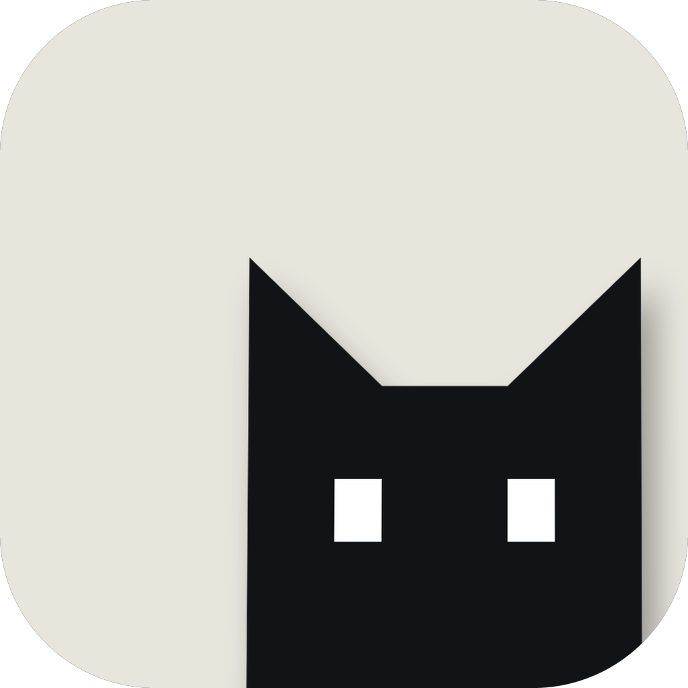
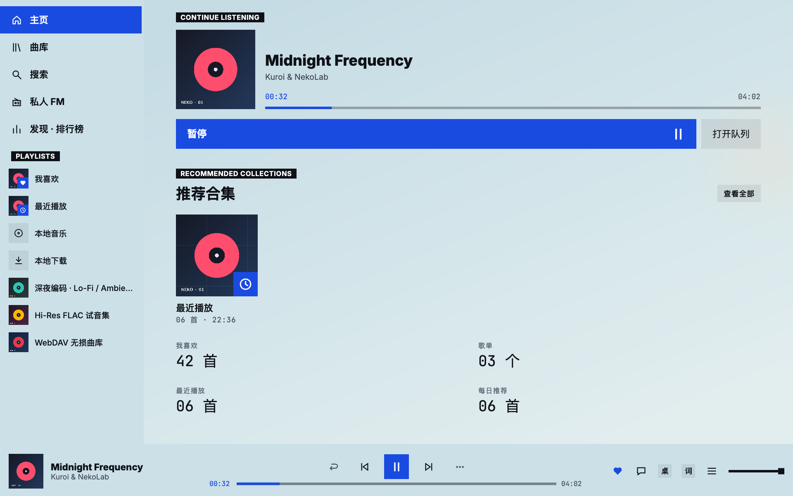

01 · MULTIPLATFORM
五端一套界面
Android、Windows、macOS、Linux、iOS 共享 UI 与业务逻辑，窗口宽窄跨过 900dp 自动在手机布局与三栏宽屏间切换。
Kotlin · Compose Multiplatform

FLATAndroid、Windows、macOS、Linux、iOS 共用一套无边框 Compose 界面与原生音频内核。内置本地与 WebDAV 无损曲库、多风格逐字歌词引擎、自定义主题与可视化动效曲线，支持 QuickJS 插件按需扩展。

1920 × 1200 · ← / → 切换
Android、Windows、macOS、Linux、iOS 共享 UI 与业务逻辑，窗口宽窄跨过 900dp 自动在手机布局与三栏宽屏间切换。
桌面端内置 libmpv、Android 用 ExoPlayer、iOS 用 AVPlayer；支持无缝切歌、1GB 播放缓存、10 段均衡器与真实采样率显示。
内置多套预设与可视化主题制作器，支持直接拖拽 cubic-bezier 动效曲线与弹簧参数，并可一键 JSON 导入导出分享。
软件本体不内置任何在线音源、无需账号；需要时可在设置中通过文件、链接或订阅导入 QuickJS 脚本插件，沙箱隔离。
自动扫描本地音乐目录并匹配同名 .lrc 歌词；直连私有 WebDAV 网盘按目录播放，支持本机喜欢、本地歌单与全量配置备份。
支持逐字浮光上浮、平滑跟进滚动、渐进景深模糊与歌词样式 JSON 导入导出；桌面端配备高度可定制的透明悬浮歌词窗。